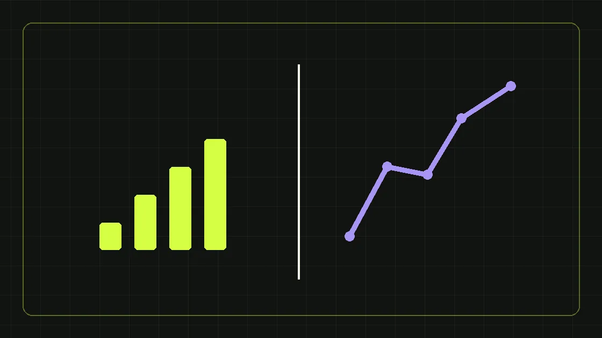

Когда эффективнее поисковый спрос, а когда — аудитории и прогрев в соцсетях.
В чём разница
Яндекс.Директ часто помогает ответить на уже сформированный запрос, когда пользователь ищет продукт или услугу. VK Реклама позволяет работать с сегментами аудитории и интересом, в том числе когда человек пока не сформулировал поисковый запрос.
Когда выбирать Яндекс.Директ
Если спрос уже выражен в запросах, есть релевантная посадочная и понятная экономика сделки, поисковые кампании могут стать удобной точкой старта. Но в узких B2B-нишах объём запросов иногда невелик, а стоимость перехода высока.
Когда выбирать VK
При сложной услуге, необходимости прогрева или работе с профессиональными сообществами полезны креативы, кейсы и форматы заявки. Качество лидов нужно проверять отдельно: дешёвая форма не равна готовности к закупке.
Как провести честный тест
Сравнивайте одинаковое определение квалифицированного лида и учитывайте путь до сделки. Для каждого канала подготовьте оффер, посадочную, события аналитики и доступ к обратной связи отдела продаж.
Можно ли сочетать
Да. Например, поиск может привлекать сформированный спрос, а социальные сети — знакомить с продуктом и возвращать заинтересованных пользователей. Финальное решение — по данным, а не по популярности канала.
Начните с вопроса, как покупатель выбирает поставщика
У B2B-аудитории есть как минимум два сценария. В первом человек уже сформулировал потребность: ищет оборудование, услугу подрядчика, стоимость внедрения или сроки поставки. Здесь часто полезна реклама в поиске, потому что объявление отвечает на конкретный запрос. Во втором человек ещё не сравнивает поставщиков или не знает, что проблема решается определённым способом. Тогда могут работать материалы, которые объясняют подход, показывают пример задачи и помогают заинтересованному человеку сделать первый шаг. Социальная реклама подходит для такого знакомства, но это не делает её автоматически дешевле или эффективнее. Выбор зависит от сформированности спроса, размера аудитории, сложности продукта и возможности квалифицировать обращение. Краткое правило: сначала изучите путь покупателя, затем выбирайте канал.
Когда Яндекс.Директ сильнее по бизнес-логике
Поисковая реклама обычно уместна там, где люди уже используют конкретные запросы с коммерческим намерением. Например, ищут поставщика промышленной упаковки или подрядчика по настройке CRM. Под такую потребность можно подготовить отдельную страницу с техническими характеристиками, условиями, преимуществами и формой обращения. Но даже высокое намерение не гарантирует качество. В узкой B2B-нише запросов может быть мало; часть пользователей интересуется вакансией, ремонтом или самостоятельной настройкой. Поэтому важны сбор минус-фраз, проверка поисковых запросов и регулярная обратная связь из отдела продаж. В системе аналитики необходимо учитывать реальные отправки форм и последующую квалификацию, а не только клики по объявлениям. Кампанию оценивают по способности создавать коммерчески полезный диалог, а не по красивому CTR.
Для каких задач VK Реклама может быть полезнее
Социальные площадки позволяют показывать предложение определённым аудиториям и знакомить их со сложным продуктом до появления прямого поискового запроса. Это удобно для экспертного контента, отраслевых мероприятий, образовательных материалов, приглашений на консультацию и формирования спроса на новую услугу. Но человек, увидевший объявление в ленте, может быть на ранней стадии выбора. Поэтому прямое требование «купить сейчас» не всегда соответствует его мотивации. Лучше тестировать полезный вход: сравнение решений, чек-лист закупки, разбор ошибки или короткий кейс. Привязка к профессиональной аудитории требует проверки доступных способов таргетирования: наличие интереса к отрасли ещё не доказывает полномочий на закупку. Качество полученных лидов необходимо измерять отдельно от их количества.
Поиск и социальная реклама по-разному измеряют интерес
Человек может искать конкретный продукт, но случайно кликнуть на объявление; другой может увидеть отраслевой материал несколько раз и обратиться только спустя месяц. Поэтому простое сравнение «стоимость одной заявки» без учёта пути клиента часто искажает выводы. Сначала зафиксируйте квалификацию: нужная отрасль, соответствующий продукт, подходящий регион, контакт с лицом, участвующим в выборе, согласованный следующий шаг. Затем сравните стоимость такого лида и переходы в коммерческие предложения. Если цикл длинный, анализируйте когорты по месяцу первого обращения и долю завершённых сделок. Не стоит приписывать рекламе всю выручку компании: часть решений формируется за счёт репутации, рекомендаций и повторных закупок. Атрибуцию нужно описать в отчёте заранее.
Как подготовить предложение под два канала
Для поисковой рекламы заголовок должен отвечать на намерение: что за услуга, для кого, какие ограничения или условия важны. Посадочная продолжает ту же мысль, иначе пользователь теряет контекст. Для социальной рекламы нужно быстрее объяснить проблему, пользу материала и причину остановиться на публикации. Формат контента может отличаться, но продукт, цена и юридически значимые условия не должны противоречить друг другу. Не копируйте один креатив во все размещения без проверки формата. Создайте несколько гипотез: экспертное объяснение, кейс с подтверждённым результатом, сравнение подходов, конкретное предложение. Оценивайте не красоту макета, а отклик подходящей аудитории. В B2B фактические вопросы клиентов часто дают лучшие рекламные формулировки, чем абстрактные обещания роста.
Что обязательно настроить до запуска теста
Нужны права доступа к рекламным кабинетам, корректная посадочная страница, проверенная форма заявки, счётчик аналитики, цели и передача источника в CRM. Для Яндекс.Директа цели в Метрике помогают оценивать и оптимизировать целевые действия; в документации Яндекса описаны стратегии, использующие выбранные цели. Для VK нужно использовать предусмотренные кабинетом средства учёта событий и корректно тестировать отправку лид-форм или заявок сайта. Проверьте, что тестовая форма действительно создаёт запись, а не просто показывает анимацию успеха. Добавьте согласованную разметку кампаний, чтобы отдел продаж мог найти источник. И ещё до первого расхода определите, кто ежедневно проверяет качество лидов и ошибки передачи данных.
Как распределять бюджет на пилот
Не существует универсального процента, который всегда нужно отдавать поиску или социальной рекламе. Сначала оцените доступный спрос, стоимость тестов и минимальный объём данных для сравнения. Выделите бюджет, который бизнес может потратить на проверку гипотез без риска для операционной деятельности. Для каждого канала задайте одинаковое определение целевого лида и отдельный критерий остановки: нецелевые обращения, ошибка формы, отсутствие подходящей аудитории, чрезмерные расходы относительно экономики сделки. При очень небольшом бюджете часто разумнее протестировать один канал качественно, чем распылиться на множество кампаний и не получить достаточно данных нигде. Не меняйте одновременно оффер, аудиторию, посадочную и распределение бюджета: так невозможно понять причину результата.
Сценарий № 1: спрос на конкретный B2B-продукт
Предположим, что компания продаёт типовую услугу с понятным коммерческим запросом. Здесь логично начать с небольшого поискового теста, отдельной страницы услуги и измерения квалифицированных обращений. Затем можно использовать социальные площадки для распространения отраслевого материала и знакомства с брендом, если аудитория мала и цикл сделки длинный. При этом поисковая кампания должна отсекать нерелевантные темы, а менеджеры — быстро подтверждать, какие заявки были подходящими. Это условный сценарий, не реальный кейс. Если фактический объём поискового спроса оказывается низким, план пересматривают. Название канала само по себе не заменяет исследования семантики и поведения аудитории.
Сценарий № 2: новая сложная услуга
Другой пример — рынок, на котором покупатели ещё не сформулировали запрос к новой технологии. Поисковых фраз может быть мало или они имеют информационное намерение. Тогда отраслевые статьи, объясняющие вебинары, обучающие материалы и социальная реклама могут формировать первый интерес. Важно предложить промежуточное действие: скачать чек-лист, получить сравнение решений, обсудить задачу с экспертом. Такой лид не обязательно готов к договору; отдел продаж должен знать его стадию. Затем можно подключать поисковую рекламу по связанным потребностям и ретаргетинг в пределах доступных платформенных и правовых возможностей. Не делайте выводы об эффективности в первые дни только по кликабельности: качество длинной воронки проявляется позднее.
Почему лид-форма не равна квалифицированному лиду
В некоторых форматах человеку легко отправить данные, поэтому стоимость первоначального контакта может быть невысокой. Но простота заполнения увеличивает риск случайных и слабомотивированных обращений. Если форма требует слишком много данных, конверсия упадёт; если слишком мало, менеджер потратит время на выяснение базовых условий. Для B2B полезно тестировать минимальные вопросы, которые реально помогают квалификации: продукт, компания, тип задачи или удобный способ связи. Согласие на коммуникацию и обработку данных должно быть корректно оформлено. Не стоит использовать ложные кнопки или непрозрачные условия ради увеличения числа отправок. Качество заявки лучше оценивать по последующему разговору и возможности предложить релевантное решение.
Какие показатели сравнивать в отчёте
Сводная таблица должна показывать расход, показы, переходы, заявки, долю квалификации, стоимость квалифицированного лида, коммерческие предложения и сделки. Если продажи ещё не закрылись, не нужно подменять их условной прогнозной выручкой. Добавьте период и правила атрибуции. Для поисковой рекламы полезно анализировать реальные поисковые запросы и типы намерений; для социальной — аудитории, креативы и этап интереса, на котором человек оставил данные. На уровне продаж особенно важны причины отказов. Иногда именно они показывают, что целевая аудитория определена неверно, а не то, что площадка «не работает». Отчёт должен завершаться решением: продолжить, изменить, сократить или остановить гипотезу.
Какие ошибки чаще всего портят тест
Первая — запускать рекламу до настройки целей и передачи заявок в CRM. Вторая — сравнивать количество форм без квалификации. Третья — использовать одинаковое рекламное сообщение для людей с разным уровнем намерения. Четвёртая — делать выводы по очень короткому периоду или нескольким обращениям. Пятая — забывать о длительности B2B-сделки. Шестая — оценивать только рекламный кабинет, игнорируя качество посадочной и скорость ответа отдела продаж. Седьмая — пытаться одновременно тестировать слишком много гипотез. Исправление начинается не с очередного креатива, а с определения бизнес-цели, качества данных и понятной последовательности экспериментов.
Вывод для B2B-компании
Выбирайте канал по механике спроса. Если покупатель уже ищет поставщика, проверяйте поисковую рекламу и релевантность посадочной. Если продукт требует объяснения и доверия, тестируйте экспертные форматы и аудитории VK Рекламы. Часто разумно сочетать оба подхода, но масштабировать их только после проверки качества обращений. За построением и ведением кампаний можно обратиться к направлению настройки рекламы, а организацию воронки и квалификации изучить на странице лидогенерации. Ни один рекламный кабинет не заменяет сильного предложения и дисциплины продаж.
Полезные официальные материалы
Перед запуском кампаний проверьте актуальные настройки в интерфейсах площадок: названия целей, способы оплаты и перечень рекламных объектов могут меняться. Для поисковой рекламы пригодится справка Яндекс.Директа о целях и оценке эффективности. Используйте её как технический источник, а не как доказательство того, что один канал лучше другого. Окончательные решения о настройках, размещениях и стратегии принимайте после проверки собственных аккаунтов и целевых действий. Если нет подтверждённой передачи заявок в CRM, сначала исправьте это: оптимизация показов по ненадёжному событию способна приводить рекламу к неверной цели.
Этот материал находится на согласовании и не индексируется поисковиками, пока редактор не подтвердит факты и источники.
Сделаем план под вашу ситуацию
Обсудим задачи бизнеса и бюджет первых тестов.
Получить маркетинговый план ↗